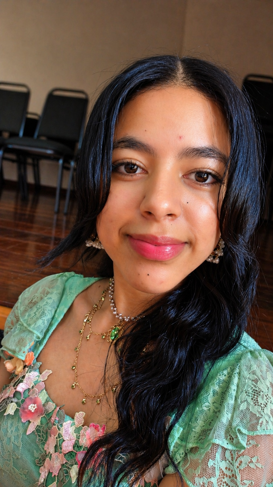

Lavinia Morais de Jesus | WDD 130

Olá, meu nome é Lavinia Morais, moro em Anápolis, Goiás, e atualmente estudo Desenvolvimento de Software. Tenho achado essa área simplesmente incrível, porque a cada conteúdo novo que aprendo eu fico ainda mais fascinada e empolgada com tudo o que é possível criar através da tecnologia. É muito gratificante perceber minha evolução e entender como o conhecimento vai se conectando aos poucos. Nos meus momentos livres, gosto muito de ler livros e assistir a filmes e séries, atividades que me ajudam a relaxar e também a conhecer novas histórias, ideias e perspectivas. Esses hobbies fazem parte da minha rotina e complementam bem minha jornada de estudos, trazendo equilíbrio e inspiração para o meu dia a dia.